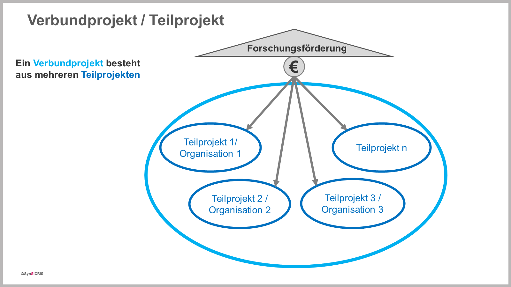

Verbundprojekte bestehen aus mehreren Teilprojekten, d.h. mehrere Organisationen
arbeiten zusammen, um ein Forschungsthema zu bearbeiten.
Wenn nur eine Organisation
an einem Forschungsthema arbeitet, ist dies in SynSICRIS als ein Verbundprojekt mit
nur einem Teilprojekt zu erfassen.

Easy-Online wird von jedem Teilprojekt genutzt
Jedes Teilprojekt hat einen eigenen easy-Online-Antrag und bekommt ein eigenes
Förderkennzeichen und einen eigenen Zuwendungsbescheid vom Förderer. Dieser ist die
vertragliche Vereinbarung zwischen dem Förderer und einer einzelnen Organisation.
Der Antrag in easy-Online und deckt die finanziell-rechtliche Seite des Antrags ab.
Jedes Teilprojekt importiert die Informationen aus dem eigenen easy-Online-Antrag.
Wenn in einem Teilprojekt wiederum mehrere Organisationseinheiten derselben Organisation
mitwirken (z.B. eine Universität mit mehreren Fachgebieten, die am Projekt finanziert
mitarbeiten), sind diese zusätzlich als Projektpartner einzutragen. So wird im
Monitoring-Tool deutlich, welche Disziplinen zusammenarbeiten.